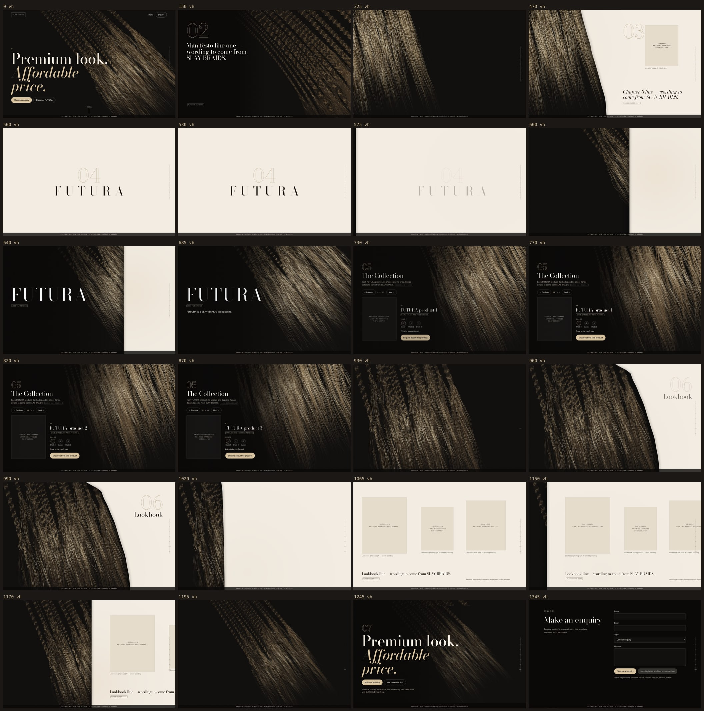
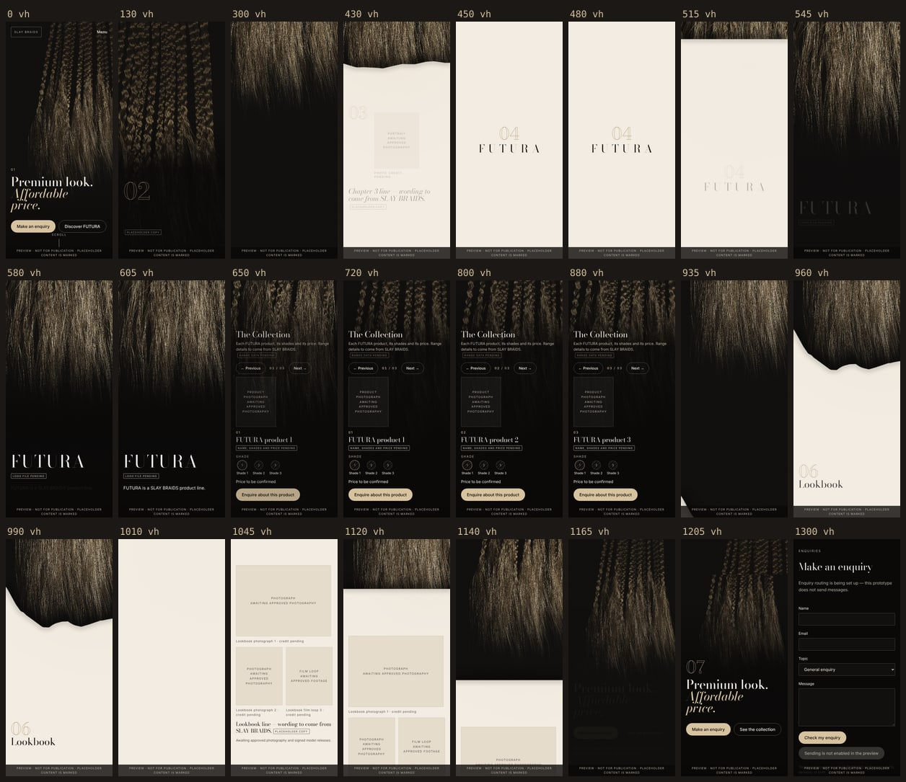
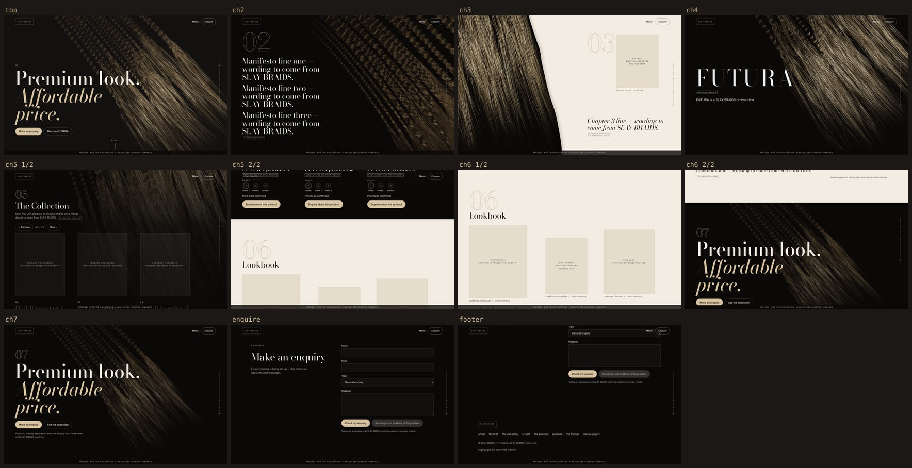
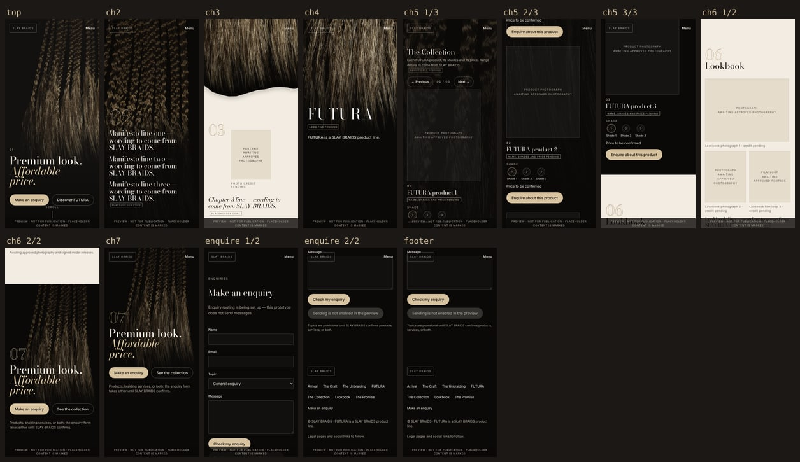

Management handoff · 27 November 2026 · branch claude/cool-ramanujan-0ln9mf

One camera, one ivory page and one light carry the whole story, so nothing resets at a chapter boundary. Chapters 1–3 are the approved baseline, unchanged.
| Chapter | What happens | Mobile |
|---|---|---|
| 1 Arrival | The approved anchor and Premium look. Affordable price. | Unchanged |
| 2 The Craft | Close on the woven braids; three manifesto lines reveal in order. | Unchanged |
| 3 The Unbraiding | The ivory page meets the loose hair along its edge, then closes over it. | Unchanged |
| 4 FUTURA | The covering page carries “04 FUTURA” printed on it. The page lifts with a straight edge and FUTURA appears in pearl light beside the hair. | The page lifts straight off; the title sits low. |
| 5 The Collection | Pinned showcase: one product per scroll step, Previous/Next, shade selector, price slot and “Enquire about this product”. | The card sits in the lower screen, the hair above. |
| 6 Lookbook | The page meets the hair again at a new pose, closes, and becomes the printed lookbook spread. | One large mount and two small ones. |
| 7 The Promise | The last lift. The camera pulls back, the light returns to champagne, and the positioning line returns with both calls to action. | Stacked |
| Enquiry, footer | The form validates and explains, but never sends. Footer navigation follows. | Single column |



Headless Chromium with SwiftShader (WebGL on the CPU) and emulated phones. Frame-time numbers from this setup say nothing about real hardware, so none are reported.
| Check | Result |
|---|---|
| Locked foundation | Lock test 6/6. The anchor_v1 encodes and M2 stills match their manifests; the masters are unmodified. |
| Unit tests | 49/49 |
| End-to-end tests | M1 15 + 1 skipped by design · M2 20/20 · new M3 26/26 |
| Chapters 1–3 pixels | 22 of 27 frames identical to the approved build. 5 mobile frames differ by at most 1/255 on 5–7 % of pixels in the Chapter 2 field, caused by browser compositing; not visible. |
| Accessibility | axe: no WCAG 2.1 A/AA violations (static, reduced and live). Live and reduced accessibility trees are identical at 8 positions per device. Lighthouse accessibility 100. |
| Contrast, Chapters 4–7 | 448 samples, none below AA; worst 6.08:1. All text over the hair is 7:1 or better. |
| Loading (lab, compressed) | LCP 0.75 s mobile (approved build 0.76 s), 0.24 s desktop · CLS 0 |
| Static-mode cost | Mobile static Lighthouse performance 86 (approved build 96): TBT 559 ms vs 246 ms |
| Bundle (gzip) | Initial JS 138.4 KB (134.9) · lazy JS 338.2 KB (333.2) |
The Vercel team slay-braids had no project, deployment or domain. I created the project slay-braids-web and deployed the build through the API, expecting a preview.
slay-braids-web.vercel.app and was publicly reachable from about 12:19 to 12:22 UTC, when I deleted it. It showed this build, with the preview banner and noindex. No custom domain existed, so nothing was overwritten. A second attempt with an explicit preview target was also made production; the deploy guard deleted it at once. Today the project has 0 deployments and its default address returns 404.main would deploy to production.vercel deploy, knowing that the first deployment goes to production.Rollback: every Vercel deployment is immutable and stays listed, so rolling back means promoting an earlier one. Every step of the build is a git commit on the branch.